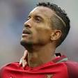

|  | Nani |
| Gender | Male |
| Ethnic | Portuguese |
| Job | Portuguese Footballer |
| Desc | Emerged from the shadow of Cristiano Ronaldo to become a crucial part of the Alex Ferguson’s side and can look back proudly on his five Premier League titles. When he was on his game he was one of the most naturally-gifted players in the league |
Affiliation
| Org | Portugal National Team |
| Club as Player | Orlando City |
| Valencia FC | |
| Manchester United | |
| xxxx |
2015 12 29 Retrieve
[on Sir Alex Ferguson] Working with Sir Alex is something I’ll never forget. He’s the best I’ve worked with. I learnt so much from him on the training ground. Even today, talking about him is inspirational and a motivation. I’m so happy to be part of his story. He is someone I’ll remember all my life
2015 12 30 Retrieve
[on Sir Alex Ferguson] I think there is no one in the world who can be compared with Alex Ferguson. [. . .] We worked for six years together, but even one year is enough to understand how good a person and manager Ferguson is. You can easily notice how big a role he is playing in the world of football. When I was playing for Manchester United, I could see that Ferguson was everything for the club. Sometimes the team were not doing well, but with a single word he managed to change everything and won the match
2016 08 20 Retrieve
[Valencia’s Portuguese winger Nanion his five-year contract at Manchester United that he signed in September 2013, under then-manager David Moyes, in an interview] It could have been the best moment of my life but it turned into the worst. After you sign a contract like that, you think all the people will be behind you and help you. And you see the opposite. Then the stress comes. I was down and, when it’s like that, of course, the injuries come too. It was a bad moment. It was something that made me very down, very disappointed
2018 05 17 Retrieve
[From Euros star to colossal flop - what next for Renato Sanches?] Renato would have been a great signing for Man United, I have no doubts. But he had a choice, and the choice he made was Bayern Munich. I hope that he has made a good choice and that he is happy in his career but I think United will now know what a big player they have missed
2019 06 03 Retrieve
[Nani says Manchester United need to sign more world-class players if they want to compete in the Premier League and Europe] United need more world-class players. Change something, attitude on the pitch. I remember from my time with [former manager] Alex Ferguson, a lot of games we weren’t playing our best, we weren’t playing beautiful football but in 15 minutes we played with our hearts and to score goals. We run, fight for each ball. That’s the way we get all the results. They must have more desire to win every battle on the pitch, every ball, every challenge because just like that they’re going to improve.
It’s hard to do well when the past is still there. All the big names and important people who made the club achieve so many trophies, they left. Now, most of them are still around but not doing what they were doing in the past like coaching or playing. Now, they need to build a new strong team, a new strong mentality. This takes time. This has been the problem at Manchester United at the moment
I keep track. It makes me sad for the club, the players. It’s not the moment of United. Maybe for next season, they can do much better. As a team, they are not a strong team. They must know that. Obviously, it’s still a young team too and maybe the club need to sign some top, experienced players to keep United among the best clubs in the world, with Barcelona, Real Madrid, Chelsea, Manchester City and Liverpool. Because at the moment, we can’t compete with them because they are stronger. But in one season, everything can change
[Nani said when asked if Solskjaer can lead United back to glory] He’s been there in the past. Obviously he has a different role now but he knows the mentality and how the club achieved what they have. But he has some good stuff to show the players, to change the mentality, to take them on the right way to fight for all the competitions. And try to be as quick as possible, the old United.
2019 06 05 Retrieve
[Nani says Cristiano Ronaldo is still the world’s best player despite not reaching his usual heights at Juventus] It was a successful season for him. I think he did great. It is not easy to play in Italy because the football there is very tactical, the defenders there defend a lot. He scored a lot of goals, continued to be the best in the world. I think he did great
[Nani said of Bernardo Silva] Bernardo is a fantastic player. He’s a natural player. He’s been doing great. He has a long career in front of him to improve each year. But this season was fantastic, his best season of his career at Man City. And I think he was one of the most important players who helped to win the title for City.
2020 01 02 Retrieve
[Ex-Man Utd winger Nani: In England, you can be drunk at training on New Year & the coach doesn’t care!] I never got in trouble. Nights out at the right time, if I had the next day off, for example, then I could have some fun. Or on special days like Christmas or New Year - no one in England cares about that. On New Year, we could even go to training drunk and the coach didn’t care about it. That’s the side of [Sir Alex] that knew how to deal with the players and have the perception to say ‘this day is special, I can’t make demands’. We had been playing non-stop all year long. If one day Wes Brown gets drunk, what are we going to do? It was a joy, a moment of relaxation, a different kind of training - clowning around. I won’t lie, I liked nights out. But now I avoid them because to be able to play at the highest level you have to drop the nights out and know the right time to enjoy yourself. That is basically what I do
2020 01 02b Retrieve
[Nani lifts lid on Man Utd exit & how Red Devils blocked Juventus move at last minute] The Sporting move happened after the 2014 World Cup in Brazil, where I returned to Manchester and there was a change of coach. It was Louis van Gaal. The year before we had changed too, it was [David] Moyes. When Ferguson left, I also wanted to leave. I thought it was the right time because things had happened that had not made me happy
[When asked for a specific example] The Champions League final - I thought I should have played as a starter in a year in which I had featured all season long. I was the best player in the team, had been in great form and when the decisive moment came, which was to play the Champions League final, they didn’t opt for me and left me on the bench. That struck me. I thought I should try to find another club, in another league maybe. It was fixed in my head. But it wasn’t easy, Manchester United weren’t going to let me go anywhere that easily.
Unfortunately I had an injury after signing [the new contract with Manchester United in 2013] and I knew I had no chance of going to any other club. A thousand and one proposals came in for me but the club thought that by renewing my contract it was all settled. I said ‘okay’
When I say five million it’s a figure of speech, I didn’t get to those figures. After a while, I thought that by them doing that to me, I really did have to leave. When I recovered [from a leg injury in 2013] I was going to Juventus, everything was alive, Juventus wanted me. The director said ‘yes’, the coach said ‘yes’. And at the last minute, at the last second, when the market closes, they said: ‘No, we don’t want that anymore, we won’t let Nani leave’.
I asked why. ‘No, you’re staying here, you’re not going’. I got upset, we argued. But when I realised I was staying I spoke to the director and said to him: ‘I am here this year, I will do my best, you showed that I am valuable, thank you very much. I’m upset by the way it was done, you left it until the last second, but I appreciate your attitude in wanting to keep me because it means I’m important to the club’.
The following year there was a change with Van Gaal arriving. In a quiet conversation with him he said he had no time or patience and that he needed to make a change. That was exactly what happened and then there was an opportunity and I went to Sporting
[That seemingly did not stop Van Gaal making a final attempt to change Nani’s mind] He told me that he was counting on me, that he knew my qualities, that I was an asset. But I explained my situation to him. I recovered from injury and after some training sessions he started to see me getting my quality back and called me: ‘Are you sure you really want to go? You can see we need you’. I said: ‘No, the decision is already made, we had already spoken hadn’t we?’ ‘Yes, yes, it was just to see if you were really sure’. And I came to Sporting
2020 01 02c Retrieve
[Nani: I was never in Cristiano Ronaldo and Wayne Rooney’s shadow at Man Utd] No. I never felt in the shadow of Ronaldo, [Ryan] Giggs or Rooney. And there were no shadows at that time. We had a fantastic team. I played with Ronaldo lots of times as a starter. Our team had two or three playing styles and when it came to facing certain teams it was Nani and Ronaldo, while others were Ronaldo with Rooney. I was fortunate that when I came to Manchester, I played a lot of games in my first two years there and I was one of the most used players in the Champions League. So I have no reason to complain
When Cristiano left, an illusion was created. People said me and Ronaldo had a very similar style, there were lots of comparisons and they wanted a replacement for him - and they had me. But they got it wrong; they shouldn’t have said we have the new Ronaldo, they should have said we have Nani. Better or worse, with different qualities. In the first two years after Ronaldo left, I had some excellent times. Then I had the misfortune of having some injuries and my form dropped after my recovery. I was no longer meeting expectations, which was maybe to produce the same numbers as Ronaldo, the same number of goals. But I was a different player; I never scored so many goals, but got more assists
2020 01 17 Retrieve
[Nani says Man Utd will do the same thing they did with Man City away] When everyone expects one team to lose in these kinds of games, that’s when that team answers in a different way. Man Utd is still Man Utd, with big players, and with a big motivation everything can happen. Even with Liverpool being the best team in the Premier League. Man Utd has great players who can decide a match in one single moment. I’m confident that Man Utd will do the same thing they did with Man City away
2020 01 19 Retrieve
[Nani has to live with as the leader and captain of Orlando City] I just focus on my club. Obviously, there is much more behind all of this, but I just focus on one thing in my career. I just focus on Orlando, winning games, doing the best for my team, my teammates. Everything around [that], I don’t care, with all due respect, because I’m a football player. I need to perform and play just football. The other things, I leave for experts to talk about. I just focus on my team, play well and try to help make the team the best in the league and that’s it
[Orlando City finished dead last in the Eastern Conference and with the second-worst record in MLS] I would like to be the one who leads this team. Everyone could say we are not strong anymore, but it’s not about that. It’s about the club and the team and building a strong team, a strong club to perform well compared with any team in MLS face to face. We need to work hard. We need to prepare all of the players, all of the staff, everyone around the club and the facility to prepare to understand the mentality and what we need to do
Last season, I arrived in a difficult moment because the team was all ready to start playing. I had to be in the middle of them, focal to the games and the season. That’s complicated. Now, it’s different. I can start from the beginning and that gives me more confidence. For sure, I will be much better
[A potential Orlando-Inter Miami rivalry is one that could very well blossom into a marquee event] I’m so excited. I hope we can make this game a big game. I want our fans to be a piece of our city. I want to see passion in that game, the desire to win. That makes it beautiful. That game, when we play with intensity and show passion, it’s beautiful. When you have a team and a rival, it’s beautiful
[At this stage of his career, Nani is having fun, even under a new kind of spotlight] What I can offer the league is my experience, my quality of football, my passion, the way I see football. Obviously, this league can offer me beautiful stadiums, good atmosphere, great feelings and quality of life. Everything in this country is fantastic. Put it all together and I’ve been very happy
I have this opportunity. I want kids to believe the way I did, sacrifice sometimes because it’s not easy to achieve what we want, but when you believe and when you want something and you try as hard as possible, that’s my feelings. I will continue to think this way until, I don’t know when it’s going to be, but I hope it’s 20 years from now
2020 01 21 Retrieve
[Chicharito’s MLS move welcomed by former Man Utd team-mate Nani] It’s amazing. It’s more quality. It’s another star player. It’s a good friend, an old friend with beautiful moments at Man Utd. We shared the dressing room for a long time. I know Chicharito well, he’s a good person, so it’ll be nice
2020 03 05 Retrieve
[Nani wants Euro 2020 spot with Portugal as MLS season kicks off] [The current Portugal team is] a great generation. You can see some quality from the young players from that next generation, but you know that every time there’s a competition, every time there’s a World Cup, a European Cup, you need a mix of a young team and experienced players to match the difficulty of that competition
I say that it’s good to bring in all this young talent, to give opportunity to young players like I did in the past, but I remember in my time, we were not so much young players in the big competitions. There were more experienced players than young players. It was a mix, and that helped a lot for the team to be more strong and with more ability to compete with the stronger teams
You cannot just say that you are playing in the USA and that league is no good compared to others. No, it’s not like that. You have one of the best leagues in the Premier League, Spain, probably Italy, and then after that, MLS is not too far from others. You can compete with those other leagues. For sure, it’s a possibility, if I do well and I’m at my best, there’s a chance to come back to the national team, so I hope so!
The moment was not good for me with the club I was representing. The coach decided that he had to do what he had to do. The opportunity was there for other players that were doing better. It’s kind of just the moment. If you are doing well and scoring goals and performing very good, obviously there’s a chance for you to represent the national team. That’s why I want to perform well with my club this season and do my best and see if there’s a small opportunity for me to be there and represent my best as usual
If you see in other leagues, the players are important. They protect the quality of the stars of the league who make the league big, who make the league look good. The stars of the league show their quality each game, and that makes fans go to the stadium and want to see the games on TV because the game is always beautiful. When the referee is the one who is the showman, it’s not so important, the game. They have improved a lot. I have seen from the last few years that they have improved a lot, but you ask me to compare to Europe? The referees in Europe are strong, but they know when to be
The young kids, I give them motivation. The way I tried to teach some things they don’t know yet or the way I try to motivate every player to be ready for a game, these kinds of things, as a captain, I learn a lot. I know certain things that, if I say in a certain moment, will help a lot for our team.
The best sport in Portugal is football, and everyone wants to play football and has this dream to play for the national team. I think one of the reasons that makes this so special in Portugal is because I arrived to the national team and we won a very important cup, the European Cup. All of those stars, all of the best players that have been with the national team, the best teams we had in the past, they were so close and they couldn’t. We made a fantastic team in 2016 and we made that happen for our country. That’s what makes this generation so special
2020 03 06 Retrieve
[Nani reveals advice he gave Bruno Fernandes before Man Utd move] That moment I was playing with him, I saw so much quality and so much potential in that player. One day in a conversation with him I just motivated him to train a little bit harder because that was the only thing that he needed in that moment for him to compete at the high level in the Premier League or Spain or a different league. My advice, at that time, I told him that the best move for him was to go to England because his style of game is the one they appreciate a lot and he will score beautiful goals as he liked to do with shooting from long range and making the fans crazy
As soon as I saw the news, the possibilities, I told him, ‘Don’t choose Manchester City, don’t choose any other team. You choose Man Utd!’ After a couple of months, he moved to Manchester United and I was so, so happy because that advice and his choice were matching. It was beautiful because the moment I saw him play there, being the best player, scoring goals. It’s nice when it works like that.
2020 03 06b Retrieve
[Deco’s guidance, Ferguson’s confidence and living in Ronaldo’s house helped Nani reach the top] Deco, I remember Maniche, Luis Boa Morte. My first days, I remember the most experienced players helped me a lot. They were giving me advice, they were yelling at me every time I did something that wasn’t the best for the team, like when I was dribbling and not passing the ball at the right time. They were teaching me. I was very pleased for that moment because I learned very quick. After that, I could perform better and compete in the Premier League, in the Champions League much better. It was very helpful for me at that age
It was easy to get along with them, Anderson and Ronaldo. When we moved to Manchester, Ronaldo offered his house for us to live with him for a few months until we knew better the city and got used to everything. Once we had our house, we could move, but that was the best thing because he was helping us with English, with the rules of the road and everything else. He was teaching us but, at the same time, it was a big competition inside of this house. We had everything there: a swimming pool, a ping-pong table, a tennis court. We were playing everything every day. We were competing to see who was the best and, at the same time, we were improving our physical conditioning. We didn’t notice, but after all these years, we know that all of those competitions made us better
I think the way Sir Alex Ferguson managed the club, the respect he got from everyone in the club, especially the players, everything he was saying everyone was agreeing with. Everyone believed in his words. If he comes in today and says, ‘Tomorrow we’re going to win 5-0 but we must do this and that, if we don’t do it we’ll lose the game, but if we do all these things I’m saying now, we’ll win 5-0 easily’. That happened so many times. He knew. It seemed like he knew, every single time, what the result would be
Ji-sung Park, I remember one game where he was not playing for three months and then arrived a very important game against Chelsea. He put him in that game, and he said, ‘Do you know why I’m putting Ji-sung Park in? Because I know he is the one that can handle what I want him to do.’ He was the one doing the role that the manager asked and he was the one that scored the winning goal. That was beautiful, and everyone was very surprised
[Watching from afar as United have lagged behind rivals like Manchester City and Liverpool] I think it’s the mentality of the players. If you take a little bit about who were the players that played at our time, the age of the players, we had so many experienced players in our team. They were performing very well and they were producing a lot of quality inside the pitch and outside of the pitch. They were helping the young players to be at the same level. They were giving advice, they were motivating the players, they were helping to improve the quality of the game and giving some responsibility to the young players because we were required to be responsible very, very fast. Otherwise, you cannot be in the team and you must be away and be in the stand watching the game
Our country lives and breathes football. I grew up just focused on football, dreaming to one day be a superstar. I was dreaming of being in the position of Figo, Deco, to be on TV playing as a professional. That made me continue to dream and play every day in the street with my friends. I never lost my attention or my focus on what I was doing because I had a lot of friends that were doing different things, different roads. I just kept doing what I loved at the time
2020 03 07 Retrieve
[Portugal winger Nani speaks about his hopes to return to the national team] You cannot just say that you are playing in the USA and that league is no good compared to others. No, it’s not like that. You have one of the best leagues in the Premier League, Spain, probably Italy, and then after that, MLS is not too far from others. You can compete with those other leagues. For sure, it’s a possibility, if I do well and I’m at my best, there’s a chance to come back to the national team, so I hope so!
2020 05 17 Retrieve
[Nani has admitted that he was initially scared of Sir Alex Ferguson] I was playing unbelievable with a lot of confidence. We won a penalty and it was Ryan Giggs who took the penalties but I felt confident and Giggs didn’t say anything. So, I took the penalty but I missed. The penalty would have made it 3-1 and, in the dressing room afterwards, [Ferguson] killed me. He said, ‘Nani, who do you think you are? Who gave you permission to take the penalty?! Ryan?!’. And then he killed Ryan Giggs, because he said, ‘Ryan, why did you let him take the penalty!’ Ryan said, ‘He grabbed the ball and I let him’. Oh my god, that day was incredible!
[To make matters worse, Nani had to share a care with the irate Ferguson after the game] I drove him back home and he didn’t talk to me. I felt very uncomfortable!
At the beginning, I was very scared of him. Like a father, when you make a mistake or do something wrong, you know?. I would see him talking with other players and I wanted to be involved but I was thinking, ‘What am I going to say? I didn’t know. So, I was scared of him until I learned to understand the language better and was able to express myself. My English has never been perfect, and is never going to be, but, at that time, it was worse than now and when we he found I could speak more with him, he started coming to me and giving me more attention. From then on, I learned more about Sir Alex Ferguson.
Giggs, (Paul) Scholes and Rio Ferdinand were always pushing me and saying things to me. I didn’t understand what they were doing. I thought they didn’t like me. They would just go mad at me all the time but that was because but they saw a lot of potential in me in training and actually believed in me. After two years or three years, I started to realise that, so I tried to do what they were saying to me
2020 05 18 Retrieve
[Nani lifts lid on life with ex-Man Utd star] Cristiano Ronaldo was very competitive. When you’re staying in his house for a day, it means he challenges you at any time. He had a swimming pool, a tennis court and ping-pong table. Sometimes, it’s just competing to see who knows who’s telling the truth, or who is right about something. Every time, there was a discussion to see who was right or who was better. The only time we were not playing was the night time, we’d sit on the sofa talking and Cristiano would just disappear [to bed]. We’d learn because me and Ando would be very tired when we woke up. He’d already been up two hours earlier, checking the news and would say: ‘Okay, let’s go’. He was the only one who had a car then, in the beginning, so we had to be ready to go with him. Fantastic moments and great memories we have
I’d not let it affect me as my focus was not on there but, after, when I had more responsibility in Manchester, when Cristiano left, at the beginning it was a little bit difficult. There were a lot of comparisons and it looks like you need to prove yourself every time, to do the same or as good as him, when you are a different player. When you arrive, people in the stadium, all the fans, they love you because they saw something different in you. They like that difference but, after they create something in their minds that he needs to be the other Ronaldo, or the new Cristiano. For those moments it was a little bit difficult but, very fast, I learned how to protect myself and distract myself from that. I had great moments in Manchester. I enjoyed so much my football there. I had some injuries in the middle and several moments that didn’t allow me to perform consistently for as long as I wanted. But I’m still very happy for everything I did in that club, all the fantastic players I played with, the coaches, all the staff I met in that great club
2020 05 19 Retrieve
[Ronaldo’s Man Utd to Real Madrid hints revealed by Nani as exit was planned months in advance] We would stay at the end of training to do competitions and they [Anderson & Ronaldo] were my team-mates, everyone has best friends or some they feel more comfortable with and they were my support. Some days he [Ronaldo] was telling us openly ‘I’m here six or seven years now, I think it’s enough for me’, he said that a couple of times. But it was always ‘I will see, I will see, I will see’ but we never thought it [Real Madrid move] would happen so fast. After we won the league in the second year he left, he produced a great season so we were still surprised
When he [Ferguson] wanted to leave I felt like I wanted to leave too. I was there so many years and now it’s a new coach and I think it’s time for me to challenge myself in a different team. Then I had a big injury, I recovered and went to the World Cup and the season after I was ready in my mind to leave the club. That’s it
I’ll tell you the truth. It will never be the same after leaving Manchester United to play for another club. It’s not the same. As a club, as a structure, the quality: everyone knows that. I’m not offending anybody. Everyone knows that: that’s why Man Utd is Man Utd, all over the world. It was great to come back to Sporting because I came back home, close to my family and my friends. It was good to breathe a little bit, to recover and get some energy back and motivation, to find a new challenge. To tell the truth, it was a great season for Sporting for me that year. I played very well and in the Champions League I scored a couple of goals. I enjoyed the football a lot in that time
2020 05 20 Retrieve
[Nani: I didn’t understand Man Utd players - I thought they didn’t like me] It was so important for me to have Giggs, Scholes, Rio Ferdinand, because they were there every time, pushing me and saying things to me. I was not understanding what they were doing. I thought they didn’t like me. They would just, every time, go mad at me because things didn’t go well but they saw a lot of potential in me in training and were believing a lot in me. After two or three years, I started realising a lot. It’s one thing to listen but you try to do what they say
Like I said, we fought, we disagreed on the field but it was the strongest team I’ve been in. We knew the times to play together, to respect each other. When we had to enjoy it together as well. We used to do celebrations because we never had a day off, our boss was a very hard person. At Christmas or someone’s birthday, or Manchester United Foundation galas, they were our opportunities to be together, drink a beer and sing. I remember a great moment at a Christmas party where I remember Scholes singing, drinking his beer. Then I had to sing as well and improvise something. I think sometimes I can rap a little bit and Rio was pushing me a lot to do that. I was doing it in English, so imagine that. My English is horrible! They were laughing a lot, so it was a great moment
2020 05 23 Retrieve
[Nani on Ronaldo] Cristiano was very competitive. When you’re staying in his house for a day, it means he challenges you at any time. He had a swimming pool, a tennis court and ping-pong table. Sometimes, it’s just competing to see who knows who’s telling the truth, or who is right about something. Every time, there was a discussion to see who was right or who was better
The only time we were not playing was the night time, we’d sit on the sofa talking and Cristiano would just disappear [to bed]. We’d learn because me and Ando would be very tired when we woke up. He’d already been up two hours earlier, checking the news and would say, ‘Ok, let’s go’. He was the only one who had a car then, in the beginning, so we had to be ready to go with him. Fantastic moments and great memories we have
2020 06 17 Retrieve
[Nani says Ronaldo told him he will probably end up in America] A couple of years ago, he told me that he will probably end up in America. It’s not 100 per cent, but probably. There is a chance
[Nani was looking forward to his second season in the division, after completing his first year in Orlando] It is a great league. Obviously there are points where we must improve as a league, even in the quality of the players. Here you have fantastic clubs, well organised with fantastic conditions, great coaches, great players. You see every season improving. I think we all have the conditions in this league. We are in a great country. Everything is around us. It is all about being better, not being afraid to improve
[In the past, though, he has suggested he wants to finish at the top. In 2015, he said] In my mind I want to finish in the top level, I want to finish with dignity so in a good club. It doesn’t mean that to go USA or Qatar or Dubai is not good but I don’t see myself [going there]
2020 07 09 Retrieve
[MLS is Back Tournament: Players raise fists and take a knee in racial justice protest] It’s a beautiful gesture from everyone. We all know we want to change the world, we want a better world, in which people look to each other without any difference, with no discrimination for colour or nationality and I think the decision at the beginning of the game and the performance from everyone was beautiful. It’s emotional for those there and I felt it for a couple of moments and I started thinking that everyone in the world should stop for a minute and start thinking about their attitudes and to see what we all can do to make a difference in the world. We must think about our children and the future for them, to teach them to behave, to be a better person and to create a better world.